Review of the course “R for Data Science” Part 01(Talk 01~ 04)
By Haoran Nie @ HUST Life ST
Reference: R for Data Science
The book updated to 2nd ed. on July,2023, here’ s a link to the official website.
This work is licensed under CC BY-NC-SA 4.0


Multi-omics data analysis and visualisation, #1
Talk 01
View the original slide through this link.
View the original R markdown file of the slide through this link.
This section has nothing to explain :)
R language basics, part 1
Talk 02
View the original slide through this link.
View the original R markdown file of the slide through this link.
Fundamental Data Type
The most basic data types include numbers, logical symbols and strings and are the basic building blocks of the other data types.
Simple Data Types
This includes vectors and matrices, both of which can contain multiple values of a certain basic data type, such as a matrix consisting of multiple numbers, a vector consisting of multiple strings, and so on. However, they can only contain a single data type.
xxxxxxxxxx31c(100, 20, 30) ## Interger vector 2c("String", "Array", "It's me".) ## String vector3c(TRUE, FALSE, TRUE, T, F) ## A logic vectorAs shown above, arrays are usually defined with the function c(). In addition, a vector containing consecutive integers can be defined using the : operator.
Conversion between data types
Automatic Conversion
A
vectorcan contain only one basic data type. Therefore, when defining arrays, if the input values are mixed, certain basic data types are automatically converted to other types to ensure consistency of the numeric types; this is calledcoercein English, and has the meaning of forced conversion. The priority of this conversion is:Logical types -> numeric types
Logical Type -> String
numeric type -> string
Manual switchover
In addition to the automatic conversion, you can manually convert the types of the elements in a vector:
Checking the type of a variable
class()Checking of classes
is.type()Conversion of classes
as.type()
Some special values in matrices
NA(Not Available) missing valuesNaN(Not a Number)is meaningless-InfNegative InfinityInfPositive InfinityNULLNull
Some functions to determine these special values:
is.na()is.finite()is.infinite()
Vectors and Arrays
Both are arrays. A vector is a one-dimensional array and a matrix is a two-dimensional array.
This means.
There can be more dimensional arrays
High-dimensional arrays, like
vectorand matrices, can contain only one basic data type.Higher dimensional arrays can be defined by the
array()function.
Vector maniulation
xxxxxxxxxx51dim(m);2nrow(m);3ncol(m);4range(m); ## Available when the content is numeric5summary(m); ## Can also be used in vectorExtra:
Incorporation
ab = c(a, b)Take part
ab[1]Replacement of individual values
ab[1] = cReplacing multiple values
ab[c(2, 3)] = c("Weihua", "Chen")Naming elements and replace values
names(ab) = as.character(ab)Reverse
rev(1:10)Sort&order
xxxxxxxxxx21lts = sample(LETTERS[1:20])2sort(lts)Fetch one line or multiple lines
xxxxxxxxxx101# (There's already some data in workspace)23$ m4> (List the content of matrix "m")56$ m[1, ]7> (List the first row of matrix 'm')89$ m[1:2, ]10> (List the first two rows of matrix 'm')You can also let the console to fetch multiple lines as the order you give.
xxxxxxxxxx11m[c("row_B", "row_A")]The console will output the contents of matrix "m" in the order of "row_B" and then "row_A".
Fetch one column or multiple columns
As can be seen from the same principle, I only list codes here
xxxxxxxxxx31m[ , 1]2m[ , c(1:2)]3m[ , c("col_B", "col_A")]Fetch parts
m[1:2, 2:3]Replacement
xxxxxxxxxx41m[1, ] = c(10)2m[, "C"] = c(230, 140)3m[1:2,] = matrix( 1:6, nrow=2)4m[1, c("C", "B")] = matrix(110:111, nrow = 1)Transparent
t(m)
The hierarchy of R’s vector types

You can use function typeof() to know the type of a vector.
Here are some examples of other is.xxx() function:
xxxxxxxxxx81is.null( NULL )2is.numeric( NA )3is.numeric( Inf );4is.list(); # This is a function which can take the place of "typeof()"5is.logical()6is.character()7is.vector();8# more ...
R language basics, part 2
Talk 03
View the original slide through this link.
View the original R markdown file of the slide through this link.
data.frame
What is a data.frame?
xxxxxxxxxx41library(tidyverse);2library(kableExtra)3kbl(head(mpg), 4 booktabs = T)Here’s the result:

Usage of head() and tail()
head()is a function to display the first rows of some data (vectors etc.)tail()is a function to display the last rows of some data (vectors etc.)
Components of data.frame and common functions
Components:
Two-dimensional table
consists of different columns; each column is a vector, different columns can have different data types, but a column contains only one data type (
int,num,chr...)Each column has the same length
Common functions:
xxxxxxxxxx31nrow() # Show the number of rows2ncol() # Show the number of columns3dim() # Show the dimensionStructure of data.frame & tibble
str(mpg)
This command shows the structure of the tibble mpg:

Make a new data.frame
You can use the function data.frame() to make a new data.frame
xxxxxxxxxx61data2 =2 data.frame(3 data = sample(1:100, 10),4 group = sample(LETTERS[1:3], 10, replace = TRUE)5 data2 = 0.16 )How to add row(s)/col(s) to an existing data.frame
Create the "table header" first, then populate the data.frame
xxxxxxxxxx271df2 =2 data.frame( 3 x = character(), 4 y = integer(), 5 z = double() , 6 stringsAsFactors = FALSE 7 )8
9df2 =10 rbind( 11 df2, 12 data.frame(13 x = "a",14 y = 1L, 15 z = 2.2 16 ) 17 )18
19df2 =20 rbind( 21 df2, 22 data.frame( 23 x = "b", 24 y = 2, 25 z = 4.4 26 ) 27 )ATTENTION
Use
rbind()function to add rows, usecbind()function to add columns.Define the new line using
data.frame()function, the "header" needs to be the same as the merged table.
You can also use these functions to bind several data.frames.
tibble
tibble is kind of similar to data.frame.
Make new tibble
tibble related functionality is provided by the tibble or tidiverse packages.
Almost all of the functions that you’ll use in this book produce tibbles, as tibbles are one of the unifying features of the tidyverse. Most other R packages use regular data frames, so you might want to coerce a data frame to a tibble. You can do that with as_tibble():
xxxxxxxxxx111as_tibble(iris)2#> # A tibble: 150 × 53#> Sepal.Length Sepal.Width Petal.Length Petal.Width Species4#> <dbl> <dbl> <dbl> <dbl> <fct> 5#> 1 5.1 3.5 1.4 0.2 setosa 6#> 2 4.9 3 1.4 0.2 setosa 7#> 3 4.7 3.2 1.3 0.2 setosa 8#> 4 4.6 3.1 1.5 0.2 setosa 9#> 5 5 3.6 1.4 0.2 setosa 10#> 6 5.4 3.9 1.7 0.4 setosa 11#> # ℹ 144 more rowsAnother way to create a tibble is with tribble(), short for transposed tibble. tribble() is customised for data entry in code: column headings are defined by formulas (i.e. they start with ~), and entries are separated by commas. This makes it possible to lay out small amounts of data in easy to read form.
xxxxxxxxxx111tribble(2 ~x, ~y, ~z,3 #--|--|----4 "a", 2, 3.6,5 "b", 1, 8.56)7#> # A tibble: 2 × 38#> x y z9#> <chr> <dbl> <dbl>10#> 1 a 2 3.611#> 2 b 1 8.5add_row()add_column()
Manipulate the tibble
See “Manipulate the
data.frame”
tibble to data.frame
as.data.frame()as_tibble()
e.g.
xxxxxxxxxx21library(tibble)2as.data.frame(head(as_tibble(iris)))Differences between tibble and data.frame
Tibble evaluates columns sequentially
xxxxxxxxxx31rm(x,y) # Delete possible x, y2tibble(x = 1:5, y = xˆ2); # You can do this with tibble3data.frame(x = 1:5, y = x ˆ 2); # But data.frame doesn't work.data.frame causes trouble when fetching subset operations
xxxxxxxxxx171df1 =2 data.frame(x = 1:3, y = 3:1)3class(df1[, 1:2])4
5#> [1] "data.frame"6
7# Subset operation :takes a column and expects a data.frame () 8class(df1[, 1]) # The result is a vector ...9
10#> [1] "integer"11
12## Tibble doesn't.13df2 =14 tibble(x = 1:3, y = 3:1)15class(df2[, 1]) ## Tibble forever16
17#> [1] "tbl_df" "tbl" "data.frame"tibble allows controlled data type conversion
There’s no proper example here.
:_(
Recycling
xxxxxxxxxx11data.frame(a = 1:6, b = LETTERS[1:2]) # data.frame CAN!!!OUTPUT
xxxxxxxxxx71# a b 2# 1 1 A 3# 2 2 B 4# 3 3 A 5# 4 4 B 6# 5 5 A 7# 6 6 Bxxxxxxxxxx11tibble(a = 1:6, b = LETTERS[1:2]); ## But tibble CAN'T!!!OUTPUT
xxxxxxxxxx41# Error:2# ! Tibble columns must have compatible sizes. ## * Size 6: Existing data.3# * Size 2: Column `b`.4# ℹ Only values of size one are recycled.ATTENTION!
The recycling of tibble is limited to lengths of 1 or equal; data.frame is just divisible.
data.frame will do partial matching, while tibble will NEVER do it.
xxxxxxxxxx51df = data.frame(abc = 1) 2df$ab; # Unwanted result ...3
4df2 = tibble(abc = 1)5df2$a; # Produce a warning and return NULLOUTPUT
xxxxxxxxxx21# Warning: Unknown or uninitialised column: `a`. 2# NULLAdvanced tips for using data.frame and tibble
attach()detach()with()within()
Following is the introduction (Produced by ChatGPT)
These functions—attach(), detach(), with(), and within()—are incredibly useful when working with data frames or tibbles in R, aiding in smoother workflows and code readability. Here's a breakdown of their functionality:
attach() and detach()
Purpose: These functions allow you to temporarily attach a data frame to the search path, making its columns directly accessible by their names.
Usage:
attach(df)attaches the specified data framedf.detach(df)detaches the specified data framedf.
Example:
xxxxxxxxxx81data(mtcars) # Loading a sample dataset2attach(mtcars) # Attaching mtcars34# Now, columns can be accessed directly5summary(mpg)6mean(mpg)78detach(mtcars) # Detaching mtcarsNote: While convenient, using
attach()can sometimes lead to confusion or unintended consequences, such as masking variables in your environment. It's often recommended to avoid usingattach()due to potential side effects.
with()
Purpose:
with()allows you to execute expressions in an environment where the data frame's columns can be referenced without using$.Usage:
with(data, expr)evaluatesexprin the context of the specified data framedata.
Example:
xxxxxxxxxx61data(mtcars) # Loading a sample dataset23with(mtcars, {4mean(mpg)5summary(cyl)6})Advantage: It helps avoid repetitive use of the data frame name while working with its columns.
within()
Purpose: Similar to
with(),within()allows modification of a data frame by evaluating expressions within it.Usage:
within(data, expr)modifiesdataaccording toexprand returns the modified data frame.
Example:
xxxxxxxxxx71data(mtcars) # Loading a sample dataset23modified_mtcars <- within(mtcars, {4mpg_square <- mpg^25hp_doubled <- hp * 26})7head(modified_mtcars) # Checking the modified data frameAdvantage:
within()is useful when you want to create or modify columns within the data frame without having to repeatedly refer to the data frame name.
Remember, while these functions can streamline your code, it's crucial to use them judiciously to avoid unexpected behavior or cluttering your global environment.
Here's the console print output for the examples provided earlier:
xxxxxxxxxx461# Using attach() and detach()2data(mtcars) # Loading a sample dataset3attach(mtcars) # Attaching mtcars4
5# Now, columns can be accessed directly6summary(mpg)7# Output:8# Min. 1st Qu. Median Mean 3rd Qu. Max. 9# 10.40 15.43 19.20 20.09 22.80 33.90 10
11mean(mpg)12# Output:13# [1] 20.0906214
15detach(mtcars) # Detaching mtcars16
17# Using with()18data(mtcars) # Loading a sample dataset19
20with(mtcars, {21 mean(mpg)22 # Output:23 # [1] 20.0906224 25 summary(cyl)26 # Output:27 # Min. 1st Qu. Median Mean 3rd Qu. Max. 28 # 4.00 4.00 6.00 6.188 8.00 8.00 29})30
31# Using within()32data(mtcars) # Loading a sample dataset33
34modified_mtcars <- within(mtcars, {35 mpg_square <- mpg^236 hp_doubled <- hp * 237})38head(modified_mtcars) # Checking the modified data frame39# Output:40# mpg cyl disp hp drat wt qsec vs am gear carb mpg_square hp_doubled41# Mazda RX4 21.0 6 160 110 3.90 2.620 16.46 0 1 4 4 441.00 22042# Mazda RX4 Wag 21.0 6 160 110 3.90 2.875 17.02 0 1 4 4 441.00 22043# Datsun 710 22.8 4 108 93 3.85 2.320 18.61 1 1 4 1 519.84 18644# Hornet 4 Drive 21.4 6 258 110 3.08 3.215 19.44 1 0 3 1 457.96 22045# Hornet Sportabout 18.7 8 360 175 3.15 3.440 17.02 0 0 3 2 349.69 35046# Valiant 18.1 6 225 105 2.76 3.460 20.22 1 0 3 1 327.61 210File IO
Read from files
Using functions from the readr package
xxxxxxxxxx31# readr is part of tidyverse 2library(tidyverse) # or alternatively 3library(readr)Some available functions:
read_csv(): comma separated (CSV) filesread_tsv(): tab separated filesread_delim(): general delimited filesread_fwf(): fixed width filesread_table(): tabular files where columns are separated by white-space. read_log(): web log files
Full documentation of the package is available through this link.
Usage
Read with predifined column types
xxxxxxxxxx111myiris2 =2read_csv("../data/talk03/iris.csv",3col_types =4cols(5Sepal.Length = col_double(),6Sepal.Width = col_double(),7Petal.Length = col_double(),8Petal.Width = col_double(),9Species = col_character()10)11)
To read from other formats, you can try the following packages:
Similar to Python
haven- SPSS, Stata, and SAS filesreadxl- excel files (.xls and .xlsx) DBI - databasesjsonlite- jsonxml2- XMLhttr- Web APIsrvest- HTML (Web Scraping)
Write to files
Use the following functions to write object(s) to external files:
Default parameters are listed.
More related documents can be found in this link.
Comma delimited file:
xxxxxxxxxx71write_csv(2x,3path,4na = “NA”,5append = FALSE,6col_names = !append7)File with arbitrary delimiter:
xxxxxxxxxx81write_delim(2x,3path,4delim = ” “,5na =”NA”,6append = FALSE,7col_names = !append8)CSV for excel:
xxxxxxxxxx71write_excel_csv(2x,3path,4na = “NA”,5append = FALSE,6col_names = !append7)String to file:
xxxxxxxxxx51write_file(2x,3path,4append = FALSE5)String vector to file, one element per line:
xxxxxxxxxx61write_lines(2x,3path,4na = “NA”,5append = FALSE6)Object to RDS file:
xxxxxxxxxx121write_rds(2x,3path,4compress =5c(6“none”,7“gz”,8“bz2”,9“xz”10),11...12)Tab delimited files:
xxxxxxxxxx71write_tsv(2x,3path,4na = “NA”,5append = FALSE,6col_names = !append7)
R language basics, part 3: factor
Talk 04
View the original slide through this link.
View the original R markdown file of the slide through this link.
IO and working enviroment management
Each R session is a separate work space containing its own data, variables, and operation history.

Each RStudio session is automatically associated with a R session
Not only RStudio, PyCharm or VSCode also support R session.
However, I’m keen on coding with PyCharm but not RStudio, for its wonderful Plug-in Environment, which can let me use plug-ins such as Code GeeX by Zhipu AI (a company founded by some student in KEG team inTsinghua University) or GitHub Copilot by GitHub to let the coding process more quickly, for the instruction from GPTs.

If you want to coding with R using PyCharm or other JetBrains IDE (i.e. IntelliJ, CLion, etc.), remember to install the R Language Plug-in

For instruction how to get FREE Student Lisence of GitHub Pro, GitHub Copilot and JetBrains Products and their benefits, see their official website:
Make sure you don’t use VPNs and use your phone to log in and apply (HUST Campus Network is recommended), give “Precise Location” permission to your browser. You may use your “[Student Number]@hust.edu.cn” mail to verify your identity as a student studying in HUST.
Because our email addresses ending with “@hust.edu.cn” are banned due to misuse, you should apply for an online verification report on CHSI (press the link to visit the website), instructions here.
Start a new RStudio session by creating a new project
To start a new session in PyCharm, simply press the bottom corner and select a new session.
Click the Project button in the upper right corner and select New Project in the pop-up menu …

Select: New directory -> New Project in the popup window
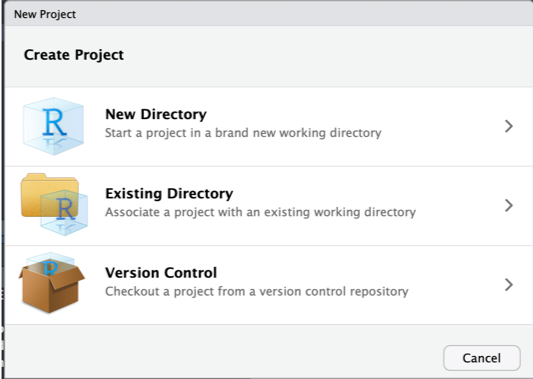
Enter a new directory name, choose its mother directory ...
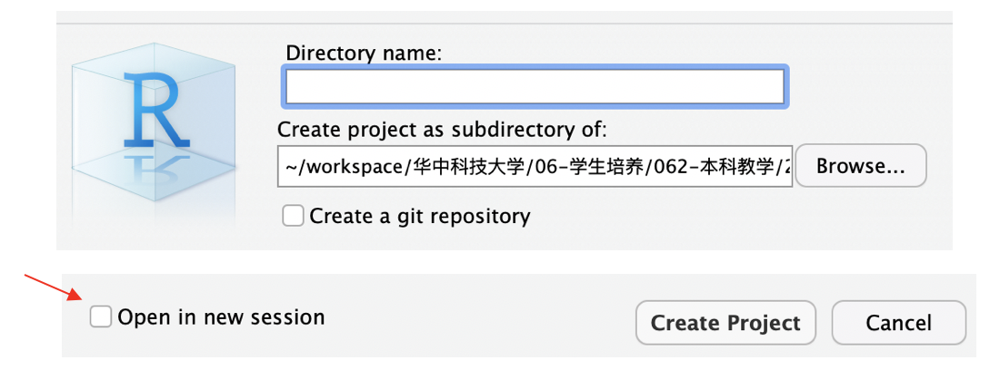
Working Space
Current workspace, including all loaded data, packets and homebrew functions.
Variables can be managed with the following code:
xxxxxxxxxx31ls() # Show all the variables in current workspace/session2rm(x) # Remove a variable3rm(list = ls()) # Remove ALL variables in current workspace/sessionVariables in working space in RStudio
The "Environment" window in the upper right corner of RStudio shows all the variables of the current workspace.
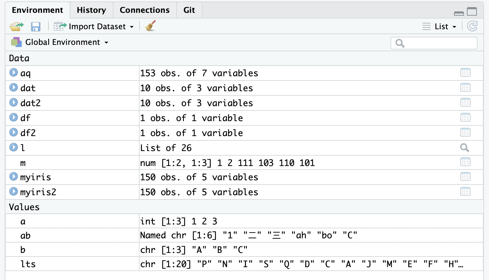
Save and restore work space
xxxxxxxxxx41# Save all loaded variables into an external .RData file2save.image(file = "prj_r_for_bioinformatics_aug3_2019.RData") 3# Restore (load) saved work space4load(file = "prj_r_for_bioinformatics_aug3_2019.RData")Notes:
Existing variables will be kept, however, those will the same names will be replaced by loaded variables
Please consider using
rm(list=ls())to remove all existing variables to have a clean startYou may need to reload all the packages
Save selected variables
Sometimes you need to transfer processed data to a collaborator ...
xxxxxxxxxx81# Save selected variables to external2save(3 city, 4 country, 5 file="1.RData"6)7# You can specify directory name8load("1.RData")Close and (re)open a project
To close a project
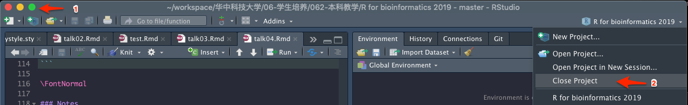
In RStudio and similar IDEs, there are some preferences to choose

The UI in PyCharm
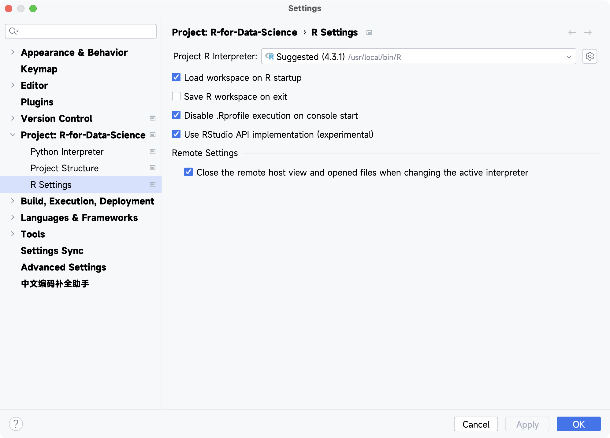
Notes:
Save on exit
Load on opening
When the data is large, the loading time may be too long ...
Open a project

When in PyCharm, simply drag the working directory to its main window, remember to trust the project.
Factors
Factor is a data structure used for fields that takes only predefined, finite number of values (categorical data).
It will limit the selection of input data.
Play around with levels()
Here are instructions of modifying factor levels
Based on the textbook
The levels are terse and inconsistent. Let’s tweak them to be longer and use a parallel construction. Like most rename and recoding functions in the tidyverse, the new values go on the left and the old values go on the right:
xxxxxxxxxx251load(gss_cat)2
3mutate(4 partyid = fct_recode(partyid,5 "Republican, strong" = "Strong republican",6 "Republican, weak" = "Not str republican",7 "Independent, near rep" = "Ind,near rep",8 "Independent, near dem" = "Ind,near dem",9 "Democrat, weak" = "Not str democrat",10 "Democrat, strong" = "Strong democrat"11 )12) 13
14count(partyid)15
16#> # A tibble: 10 × 217#> partyid n18#> <fct> <int>19#> 1 No answer 15420#> 2 Don't know 121#> 3 Other party 39322#> 4 Republican, strong 231423#> 5 Republican, weak 303224#> 6 Independent, near rep 179125#> # ℹ 4 more rowsUse this technique with care: if you group together categories that are truly different you will end up with misleading results.
The order of the levels determines the sorting order.
Use factor to clean data
Usage of
fct_xxx()functions.
Suppose I have a set of gender data that is written in a very irregular way:
xxxxxxxxxx71gender =2 c("f", "m ", "male ","male", "female", "FEMALE", "Male", "f", "m")3
4gender_fct =5 as.factor(gender)6
7fct_count(gender_fct)The output looks like this:
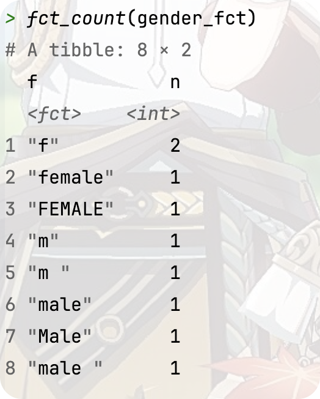
Now I request to replace with Female, Male.
xxxxxxxxxx81gender_fct =2 fct_collapse(3 gender,4 Female = c("f", "female", "FEMALE"),5 Male = c("m ", "m", "male ", "male", "Male")6 )7
8fct_count(gender_fct)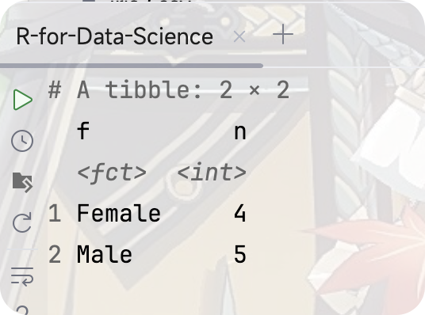
You can also use fct_relabel() to do the same thing
xxxxxxxxxx91fct_relabel(2 gender,3 ~ ifelse(4 tolower(5 substring(., 1, 1)) == "f",6 "Female",7 "Male"8 )9)Usage of factors in drawing plots
xxxxxxxxxx131library(ggplot2)2
3responses =4 factor(5 c("Agree", "Agree", "Strongly Agree", "Disagree", "Disagree", "Agree")6 )7
8response_barplot =9 ggplot(10 data = data.frame(responses),11 aes(x = responses)12 ) +13 geom_bar()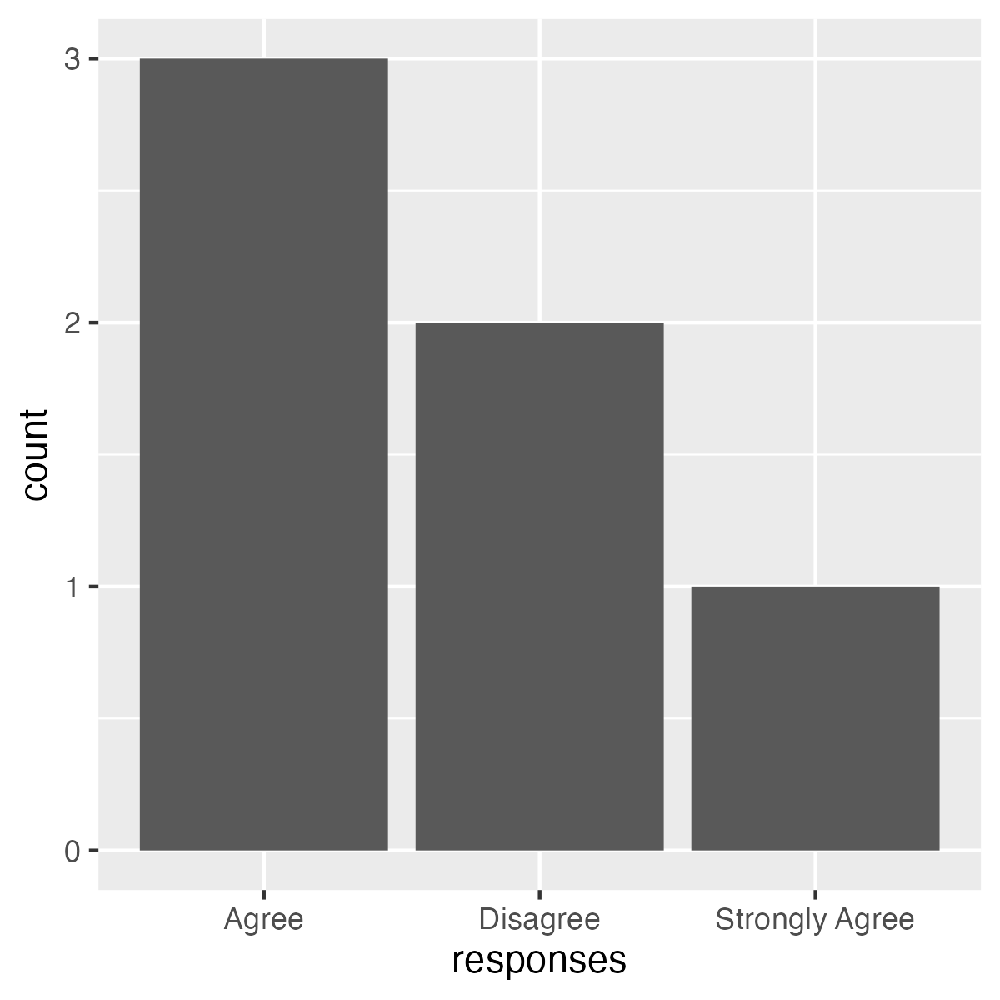
By default, factor is sorted alphabetically.
ggplot2 also plots factor in that order, so you can adjust the factor to adjust the drawing order.
xxxxxxxxxx171res =2 data.frame(responses)3# Sort by level of agreement from strong -> weak4res$res =5 factor(6 res$res,7 levels =8 c("Strongly Agree", "Agree", "Disagree")9 )10
11response_barplot2 =12 ggplot(13 data = res,14 aes(x = res)15 ) +16 geom_bar() +17 xlab("Response")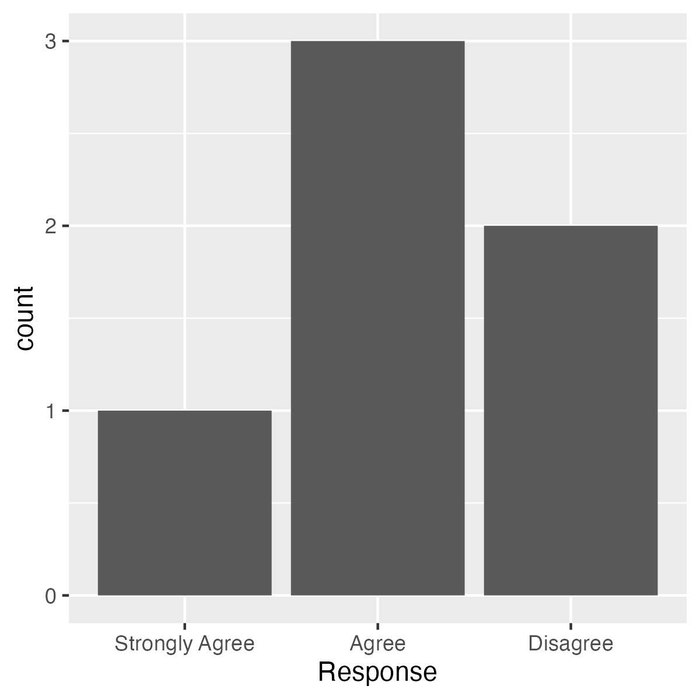
You can also use the parameter ordered to let others know that your factor is ordered properly.
xxxxxxxxxx51responses =2 factor(3 c("Agree", "Agree", "Strongly Agree", "Disagree", "Disagree", "Agree"),4 ordered = TRUE5 )
Using factor to vhange values
You can use recode() in dplyr package to change value
dplyr is a grammar of data manipulation, providing a consistent set of verbs that help you solve the most common data manipulation challenges:
mutate()adds new variables that are functions of existing variablesselect()picks variables based on their names.filter()picks cases based on their values.summarise()reduces multiple values down to a single summary.arrange()changes the ordering of the rows.
These all combine naturally with group_by() which allows you to perform any operation “by group”. You can learn more about them in vignette("dplyr"). As well as these single-table verbs, dplyr also provides a variety of two-table verbs, which you can learn about in vignette("two-table").
Based on the introduction on the official website of
dplyr.
Here’s an example:
xxxxxxxxxx1131x =2 factor(3 c("alpha", "beta", "gamma", "theta", "beta", "alpha")4 )5
6x =7 recode(8 x,9 alpha = "a",10 beta = "b",11 gamma = "c",12 theta = "d"13 )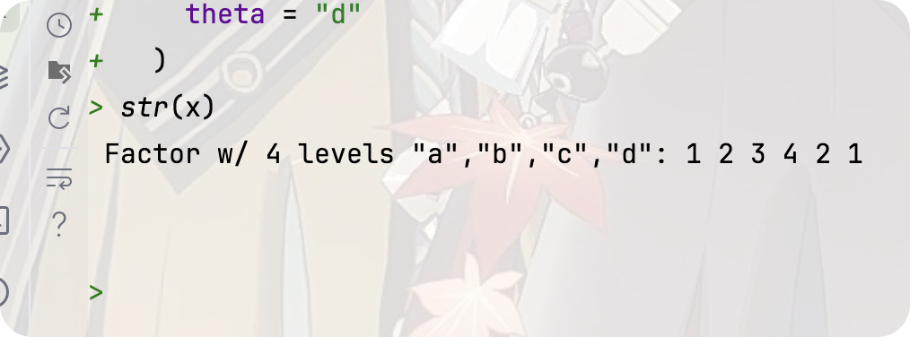
Delete useless levels
xxxxxxxxxx11mouse.genes =2 read.delim(3 file = "data/talk04/mouse_genes_biomart_sep2018.txt",4 sep = "\t",5 header = T, 6 stringsAsFactors = T 7 )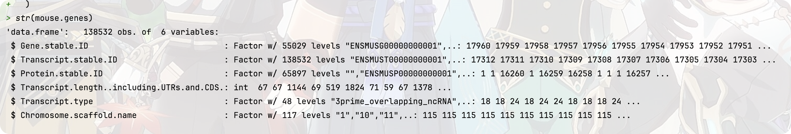
If you draw a plot without deleting the useless levels, you will get this result:
But when you delete the useless level using these commands:
xxxxxxxxxx11mouse.chr_10_12$Chromosome.scaffold.name =2 droplevels(mouse.chr_10_12$Chromosome.scaffold.name)You will see that:

Then, you’ll get the plot like this:
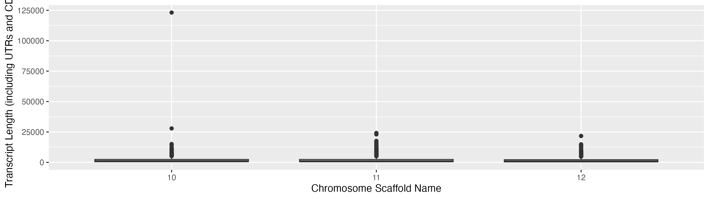
Source code:
xxxxxxxxxx1131mouse_gene_plot02 =2 ggplot(3 mouse.chr_10_12,4 aes(5 x = Chromosome.scaffold.name,6 y = Transcript.length..including.UTRs.and.CDS.7 )8 ) +9 geom_boxplot() +10 labs(11 x = "Chromosome Scaffold Name",12 y = "Transcript Length (including UTRs and CDS)"13 )You can also use tibble to solve these problems:
xxxxxxxxxx1301mouse.tibble =2 read_delim(3 file = "data/talk04/mouse_genes_biomart_sep2018.txt",4 delim = "\t",5 quote = "",6 show_col_types = FALSE7 )8
9mouse.tibble.chr10_12 =10 mouse.tibble %>% filter(11 `Chromosome/scaffold name` %in% c("10", "11", "12"))12
13
14mouse_gene_plot03 =15 ggplot(16 mouse.tibble.chr10_12,17 aes(18 x = Chromosome.scaffold.name,19 y = Transcript.length..including.UTRs.and.CDS.20 )21 ) +22 geom_boxplot() +23 labs(24 x = "Chromosome",25 y = "Transcript length (bp)"26 ) +27 coord_flip() +28 ylim(0, 2500) +29 theme_bw()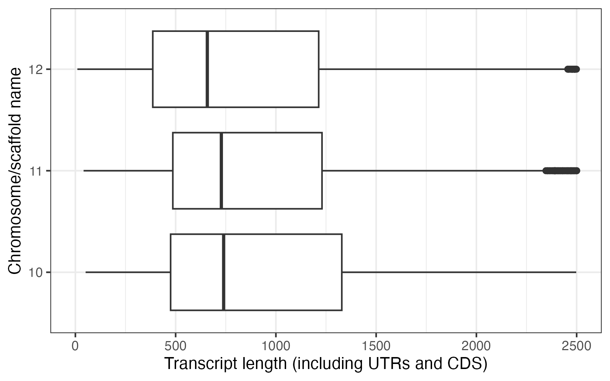
Advance usage
Use
reorder()function to reorder the level.xxxxxxxxxx51x = reorder(2`Chromosome/scaffold name`,3`Transcript length (including UTRs and CDS)`,4median5)
Use
forcats::fct_reorder()to reorder factorsxxxxxxxxxx11x = fct_reorder(2`Chromosome/scaffold name`,3`Transcript length (including UTRs and CDS)`,4median5)